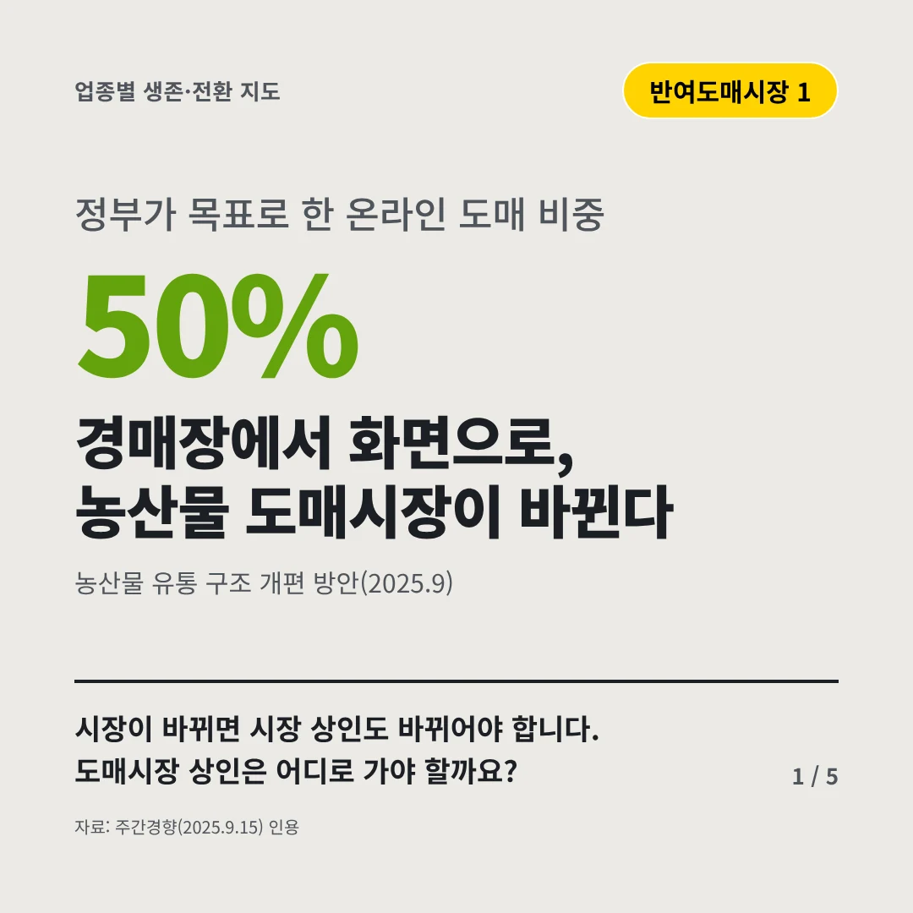
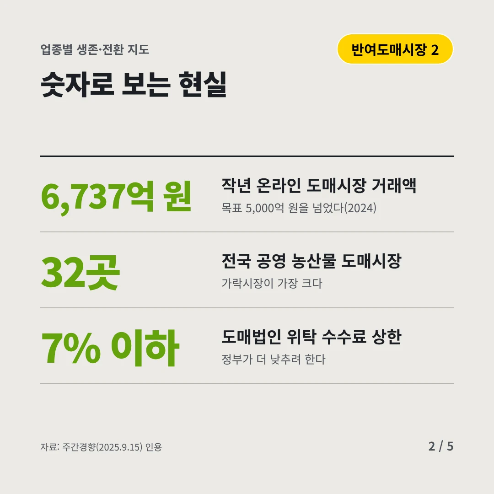
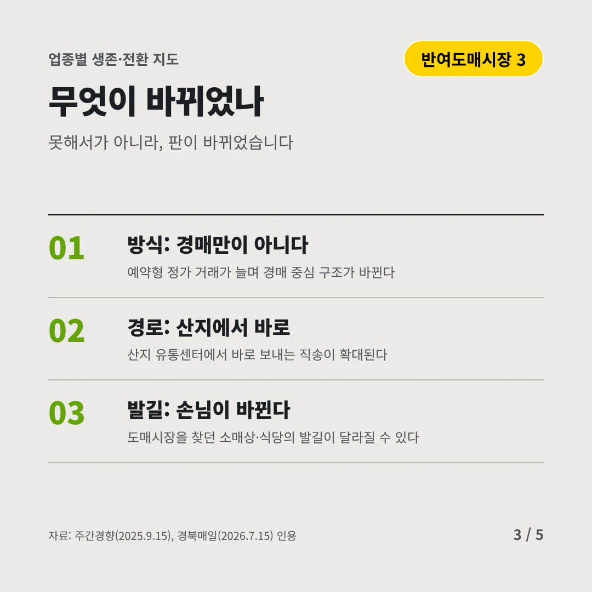
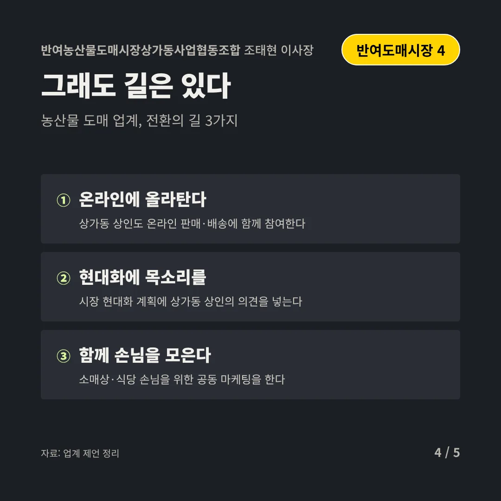
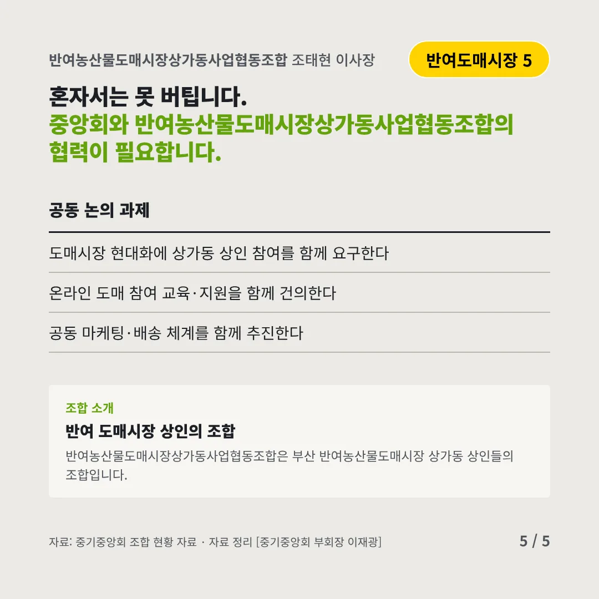
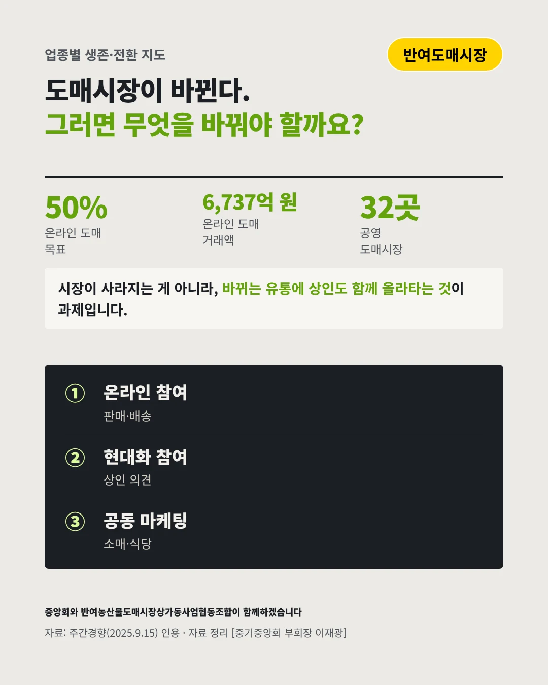

반여농산물도매시장상가동사업협동조합조태현 이사장
경매장에서 화면으로, 농산물 도매시장이 바뀐다
50% 정부가 목표로 한 온라인 도매 비중






시장이 바뀌면 시장 상인도 바뀌어야 합니다. 도매시장 상인은 어디로 가야 할까요?
숫자로 보는 현실
- 6,737억 원작년 온라인 도매시장 거래액목표 5,000억 원을 넘었다(2024)
- 32곳전국 공영 농산물 도매시장가락시장이 가장 크다
- 7% 이하도매법인 위탁 수수료 상한정부가 더 낮추려 한다
무엇이 바뀌었나
- 방식: 경매만이 아니다예약형 정가 거래가 늘며 경매 중심 구조가 바뀐다
- 경로: 산지에서 바로산지 유통센터에서 바로 보내는 직송이 확대된다
- 발길: 손님이 바뀐다도매시장을 찾던 소매상·식당의 발길이 달라질 수 있다
그래도 길은 있다
- 온라인에 올라탄다상가동 상인도 온라인 판매·배송에 함께 참여한다
- 현대화에 목소리를시장 현대화 계획에 상가동 상인의 의견을 넣는다
- 함께 손님을 모은다소매상·식당 손님을 위한 공동 마케팅을 한다
한 장 요약

조합 소개
반여농산물도매시장상가동사업협동조합은 부산 반여농산물도매시장 상가동 상인들의 조합입니다.
자료: 주간경향(2025.9.15), 경북매일(2026.7.15)